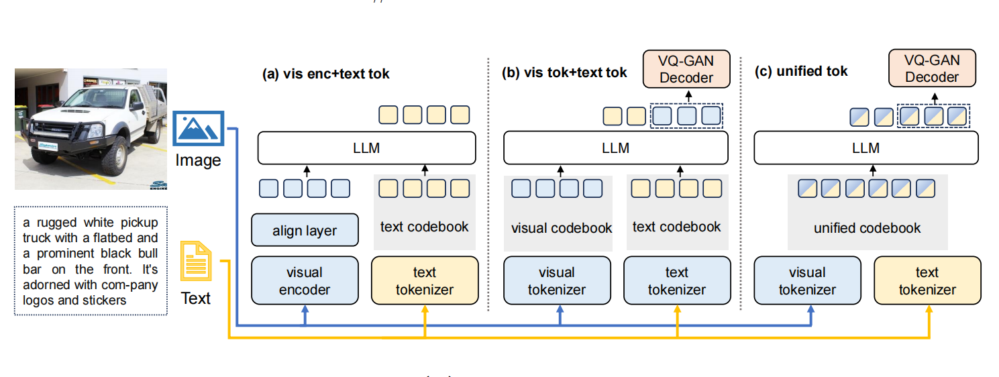
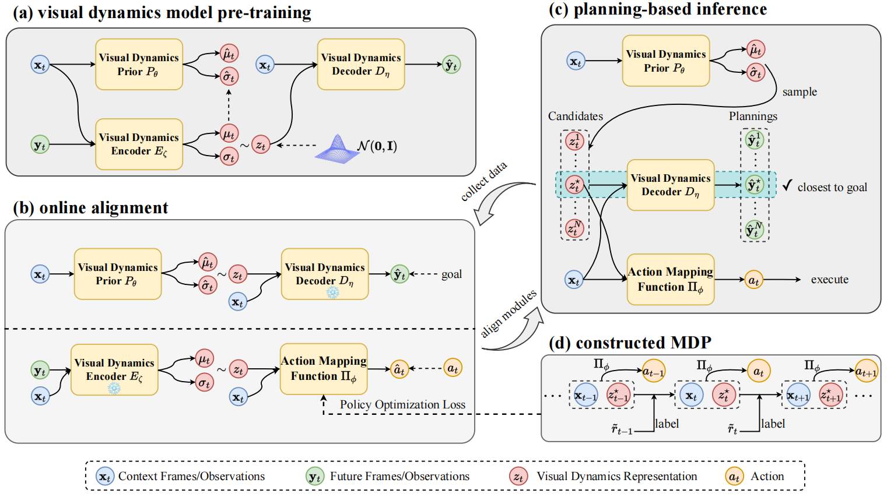
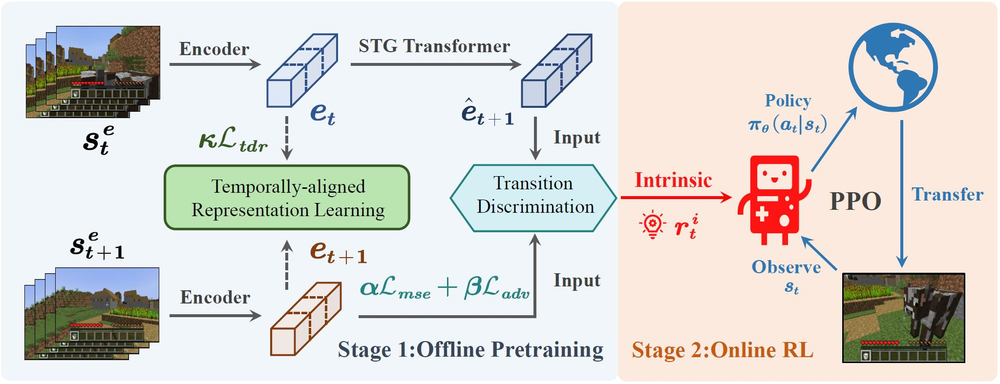
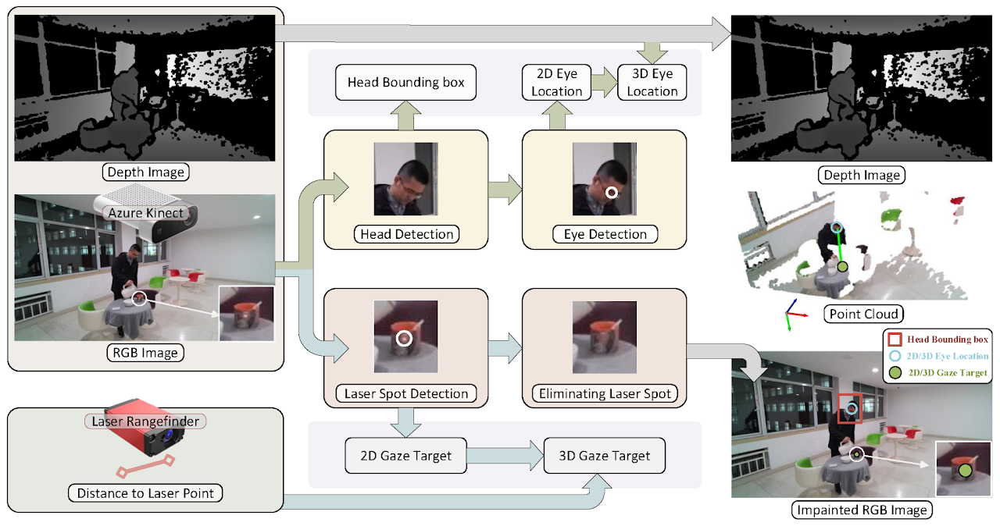
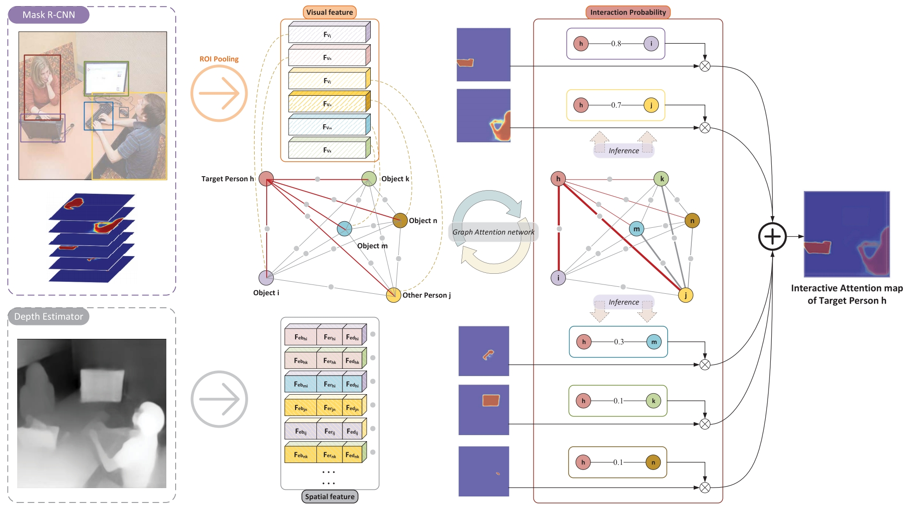

üêßI'm currently a master student (from Sep 2023) in the School of Computer Science of PKU, supervised by Zongqing Lu. My current research focuses on reinforcement learning, multimodal learning, robotics and generalizable agent. Feel free to drop me a email to discuss or share wonderful ideas!
üÜïNews
| Jul 1, 2024 | UniCode is accepted by ECCV 2024, focusing on general multimodal representation! ✨ |
|---|
| Jul 1, 2024 | PVDR is accepted by ECCV 2024, focusing on pre-trained representation for policy learning! ✨ |
|---|
| Mar 11, 2024 | Cradle is accepted by ICLR 2024 Workshop and NeurIPS 2024 Workshop, focusing on general computer control (LMMagent)! ✨ |
|---|
| Sep 22, 2023 | STG is accepted by NeurIPS 2023, focusing on learning from visual observations! ✨ |
|---|
| Mar 04, 2023 | GFIE is accepted by CVPR 2023, focusing on human-object interaction (benchmark)! ✨ |
|---|
üìÑMain Publications
-

Cradle: Empowering Foundation Agents towards General Computer Control
NeurIPS 2024 Workshop -

UniCode: Learning a Unified Codebook for Multimodal Large Language Models
ECCV 2024 -

Pre-trained Visual Dynamics Representations for Efficient Policy Learning
ECCV 2024 -

Towards General Computer Control: A Multi Modal Agent For Red Dead Redemption II As A Case Study
ICLR 2024 Workshop -

Learning from Visual Observation via Offline Pretrained State-to-Go Transformer
NeurIPS 2023 -

GFIE: A Dataset and Baseline for Gaze-Following from 2D to 3D in Indoor Environments
CVPR 2023 -

Gaze Target Estimation Inspired by Interactive Attention
TCSVT 2022
üéìAcademic Services
- Teaching Assistant: None
-
None
- Reviewer:
- Conference: None
- Journal: None
üôÜ‚Äç‚ôÄÔ∏èüê∂Friends & Coworkers
Some of my co-authors: Li ke, Weihao Tan .Some of the buddies in our Lab: Zongqing Lu .